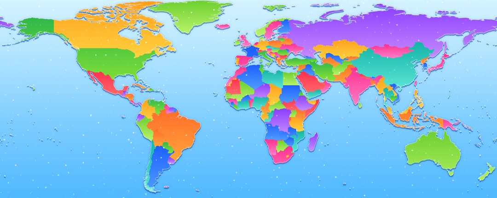

株式フリック旅行
世界と日本の名所・地名・首都を、ひらがなでどれだけ速く打てるか。10問のトータルタイムで勝負しながら、旅に出よう。
世界一周マップ0 / 100か所

太平洋 太平洋 大西洋 インド洋 N↑ 日本海 太平洋 沖縄・八重山 N
↑
レベルをクリアすると、その名所に ピンが立つよ。ピンを押すと 名前が出るよ。
レベルをえらぶ
表示されたひらがなを、そのまま打ち写してね。レベル1がいちばんかんたん。どのレベルも いつも同じ10問なので、タイムをくらべられるよ。
漢字に変換しなくてOK。句読点やスペースは打たなくて大丈夫。
ルール：予測変換は使わずに、自分の指で打ち切ろう。速くなるほど、世界の名所も自然と覚えられるよ。
0.00秒
0.0文字 / 秒
0打った文字数
-自己ベスト
🏆 みんなのランキング